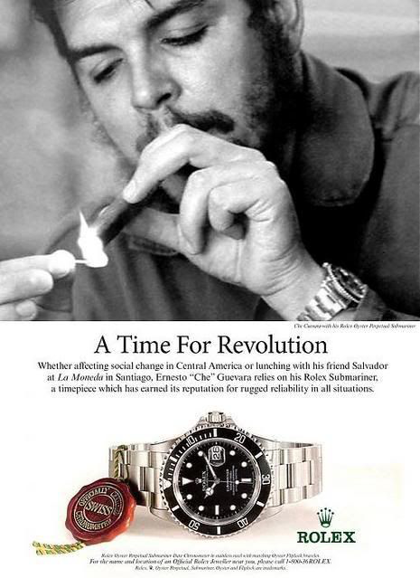
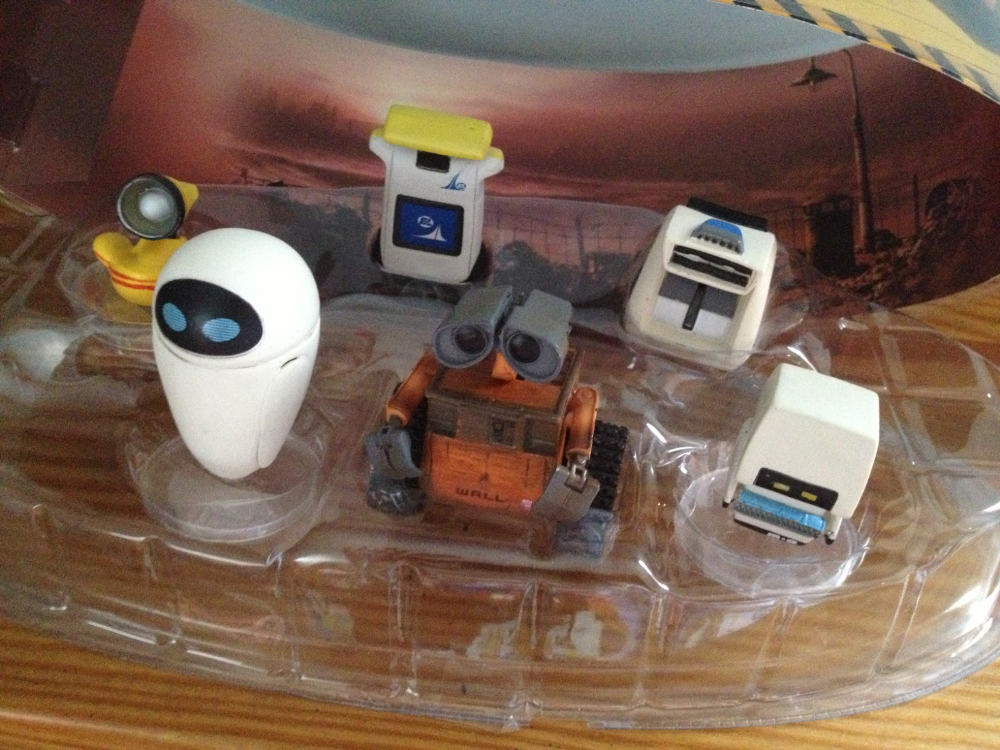

The Neutralization of the Other

The film Wall-E, released in 2008, presents a dystopian future where the Earth has been ravaged by the perils of consumerism, greed, and climate change. Consequently, humanity has evacuated to a spacecraft known as the Axiom, leaving behind only a swarm of garbage-collecting robots.The movie ends with in a bright-hopeful tone of "everything will be fine if we all work together", a trope of modern media.
It declares itself as a critique of environmental degradation, corporate greed, and rampant consumerism.It doesn't employ metaphors nor it is an allegorical journey rather, Wall-E's criticism is straightforward enough to be understood by the general public.
This movie is a perfect representation of ideology in our world.A movie being produced by The Walt Disney Corporation, The same Corporation that is the pinnacle of modern consumerism and corporate greed.The corporation thrives on consumerism, producing huge amounts of disposable plastic waste while capitalizing on society's nostalgia.It is able to mask itself as a family-friendly company that "cares about you" , that "loves diversity, LGBT, Black People".Disneyland, its greatest triumph, epitomizes the concept of the hyperreality, where the boundaries between the real and the simulated blur.I assume the reader knows much more about the Walt Disney Corporation than I have described.In short, Disney is not so much different from the corporations in the movie.

Here we must ask a few questions...
Why did Disney even make this movie ?
Why did nothing change at the end ?
To answer these questions, we must dive deep into the heart of modern ideology. We must think about on how we perceive and treat "the foreign," "the alien," and "the evil". We must question the very existence of "the different".
I implore the reader to ponder, to question, to push the very boundary of your reason and core beliefs.Our future and freedom depends on it.